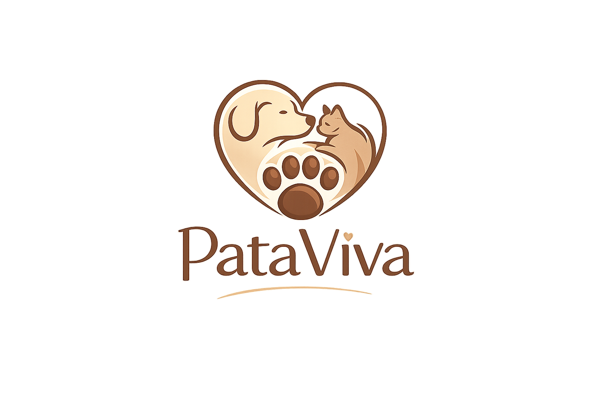

Na PataViva, resgatamos, cuidamos e encontramos lares cheios de amor para animais que precisam.
Dê um lar cheio de amor para um animal resgatado.
Contribua para alimentação e cuidados.
Ajude diretamente nas atividades da ONG.
A PataViva é uma ONG sem fins lucrativos que tem como missão ser a voz dos animais, lutando por seus direitos e oferecendo cuidado e proteção para aqueles em situação de abandono.
Ser reconhecida como uma das principais ONGs de proteção animal do país, promovendo um futuro com mais respeito e responsabilidade.
Atuamos com amor, responsabilidade e compromisso com o bem-estar animal. Incentivamos a adoção responsável, a conscientização da sociedade e a importância da castração para reduzir o abandono. Acreditamos que juntos podemos transformar vidas — tanto dos animais quanto das pessoas.
Desde 2020, a PataViva atua no resgate, cuidado e proteção de animais em situação de abandono. Ao longo dos anos, já conseguimos transformar a vida de centenas de cães e gatos, oferecendo uma nova chance com amor e dignidade.
Nosso trabalho vai além do resgate: promovemos a adoção responsável, incentivamos a castração e buscamos conscientizar a sociedade sobre o cuidado com os animais.
Cada número representa uma vida salva e uma história transformada — e seguimos firmes para ajudar ainda mais.